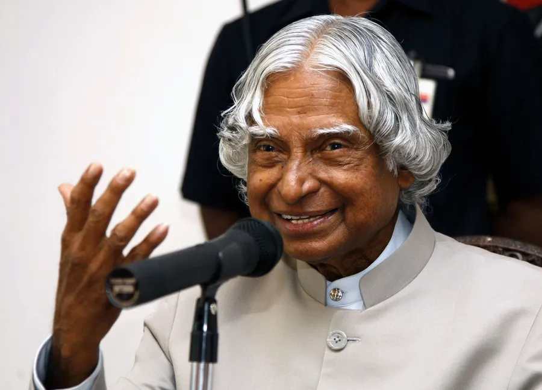

A.P.J Abdul Kalam at UN conference Meeting

'My Vision for India' is a speech delivered by India’s former President, Dr. A.P.J Abdul Kalam, in which he describes his three visions for India if it has to enter the comity of developed nations.

On 27 July 2015, Kalam travelled to Shillong to deliver a lecture on "Creating a Livable Planet Earth" at the IIM Shillong. After only five minutes into his lecture, he collapsed. He was rushed to the nearby Hospital in a critical condition. Despite being placed in the intensive care unit, Kalam was confirmed dead of a sudden cardiac arrest.